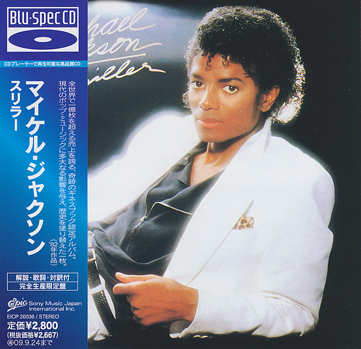

CD
Thriller
Michael Jackson
Media: Near Mint (NM or M-) · Sleeve: Near Mint (NM or M-)
CA$124.26
Discogs SuggestedCA$169.23
Discogs MedianCA$169.23
Discogs HighCA$169.23
- Physical Copy ID
- BB-CD-1549
- Year
- 2009
- Label
- Epic
- Catalog #
- EICP 20036
- Country
- JPJapan
- Genre / Style
- Electronic, Funk / Soul, Non-Music, Pop · Interview, Promotional, Soul, Disco